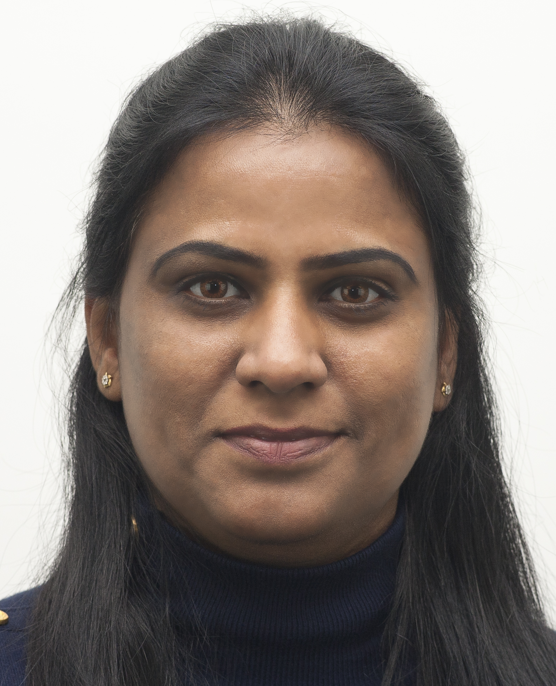

Scientist, Computational Genomics & Bioinformatics
BASF, Division of Research Technology · Davis, CA
Results-driven computational scientist with 15+ years of experience designing, developing, and managing large-scale data systems, bioinformatic pipelines, and computational platforms in regulated research and enterprise environments. My work spans pangenome construction, structural variant discovery, de novo genome assembly, and interactive data visualization — with a focus on translating complex genomic data into actionable insights for plant breeding and crop improvement.
For a full list of publications, see Google Scholar.
Python, R, JavaScript, Bash/Shell, Linux/Unix
HPC Cluster Administration, Cloud Computing, Docker, Singularity, LIMS
Graph Databases (Pangenome), Relational Databases, Large-scale NGS Data
Git, Bamboo, JIRA, Confluence, SharePoint, Nextflow, Snakemake
Statistical analysis, interactive dashboards, GWAS visualization, SAS
Agile/Scrum, budget management, IP/regulatory compliance
I am open to collaborations in computational genomics, pangenome research, and bioinformatics pipeline development. Feel free to reach out via email or connect on LinkedIn.
Location: Davis / Sacramento, California, USA